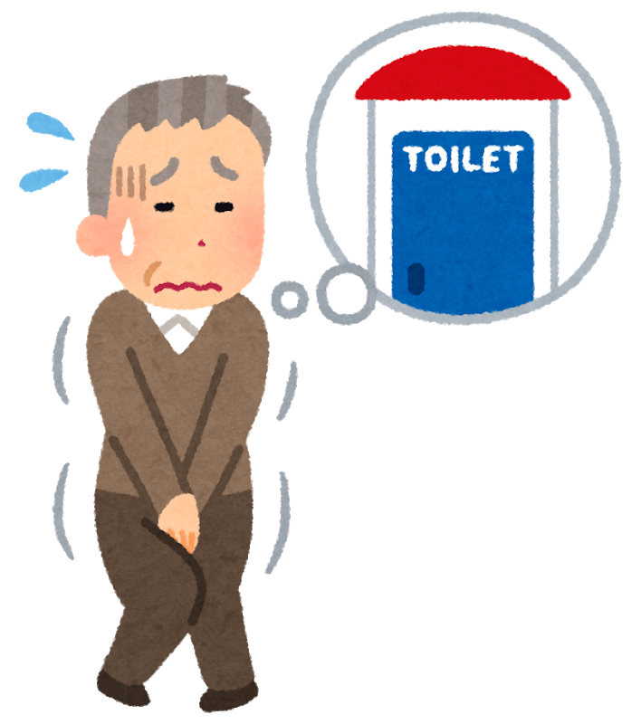
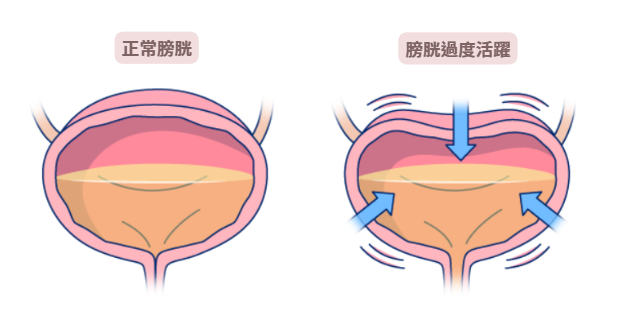
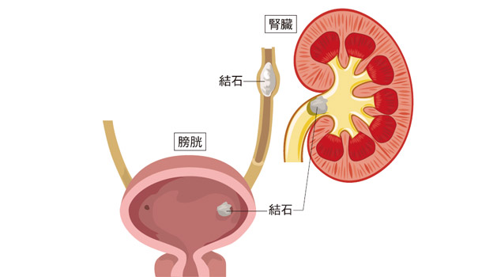
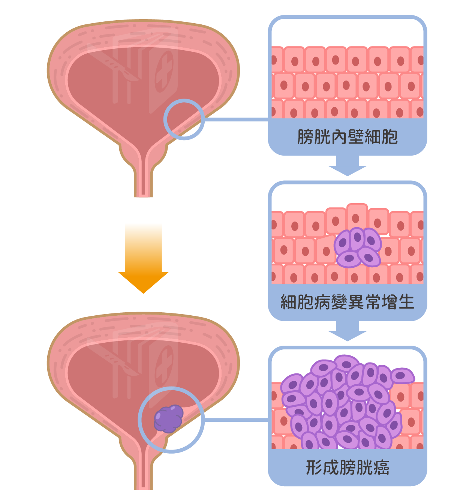
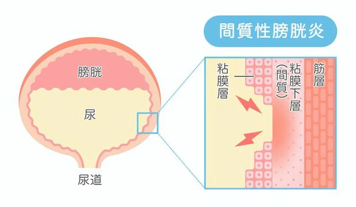

介紹
腰子和膀胱分別是泌尿系統的兩個重要器官。腰子（腎臟）負責過濾血液中的廢物、調節水和電解質平衡，以及分泌激素；膀胱則儲存尿液並負責排尿。由於各種原因，這些器官可能出現不同的疾病。
膀胱炎（Cystitis）
-
膀胱炎是膀胱內部的炎症，通常是由細菌感染引起。這是最常見的尿路感染（UTI）。
-
病因:
1.細菌感染：大腸桿菌是最常見的病原體。 2.不良的個人衛生習慣：女性容易因為尿道較短而受到感染。 3.尿路結構異常：如尿道狹窄或膀胱結石，可能會增加感染風險。
- 症狀：
1.頻繁、急迫的排尿感 2.排尿時疼痛或燒灼感 3.下腹部不適或疼痛 4.血尿（尿中帶血）- 預防：
1.保持良好的個人衛生：尤其是女性要注意從前向後清潔，避免細菌進入尿道。 2.增強水分攝取：多喝水有助於沖刷膀胱。 3.排尿後清潔：每次排尿後都要清潔，避免細菌感染。- 治療：
1.抗生素治療：是膀胱炎的主要治療方法。 2.止痛藥：可緩解排尿時的痛苦。 3.增加水分攝取：有助於加快康復。膀胱過度活躍症（Overactive Bladder, OAB）
-
是膀胱無法正常控制的過度收縮，導致頻繁的排尿需求，有時伴隨尿急和尿失禁。
- 病因:
1.神經系統異常：如中風或糖尿病等疾病損害控制膀胱的神經。 2.膀胱炎或尿路感染：長期的感染可能刺激膀胱過度活躍。 3.年齡增長：隨著年齡增長，膀胱控制可能變差。
- 症狀:
1.頻繁的尿急，甚至在晚上也有強烈的排尿需求（夜尿） 2.尿失禁，無法控制排尿 3.排尿困難或感覺膀胱沒有完全排空
- 預防：
1.定期排尿：避免長時間憋尿。 2.控制體重和飲食：過重或過量攝入刺激性食物（如咖啡因、酒精）可能加重症狀。
- 治療：
1.藥物治療：抗膽鹼藥物（如奧美拉唑）可減少膀胱的過度收縮。 2.行為治療：例如膀胱訓練，學會延遲排尿和控制尿急感。 3.手術：對於藥物和行為治療無效的患者，可能需要進行膀胱神經調節治療或其他手術。
膀胱結石（Bladder Stones）
-
膀胱結石是膀胱內形成的硬塊，通常是由尿液中鹽分和礦物質結晶沉積形成。
- 病因:
1.尿液濃縮：如長時間不排尿或脫水，會使尿液中礦物質濃縮，增加結石形成的風險。 2.尿路感染：慢性尿路感染可能導致結石形成。 3.膀胱排空不完全：如尿液無法完全排出，殘留的尿液會促進結石的形成。
- 症狀:
1.頻繁的尿急或排尿困難 2.排尿時疼痛或燒灼感 3.血尿（尿中帶血） 4.下腹部或會陰部的疼痛
- 預防：
1.保持充足的水分攝取：每天喝足夠的水有助於稀釋尿液，減少鹽分和礦物質結晶的沉積。建議每天至少喝8杯水（約2公升）。 2.避免長時間憋尿：定期排尿，避免尿液在膀胱中長時間停留，這有助於減少結石形成的機會。 3.均衡飲食：避免過多攝取高鈣、草酸或鹽分等易形成結石的食物，保持飲食均衡，增加新鮮蔬果的攝入。 4.控制尿路感染：對於有尿路感染問題的人，應積極治療並預防感染的再次發作，因為慢性感染是結石形成的風險因素之一。 5.改善排尿習慣：如果有排尿不完全或尿流減弱的情況，應尋求醫療幫助，解決膀胱排空不完全的問題。
- 治療：
1.增加水分攝取：有助於沖刷膀胱並防止結石形成。 2.藥物治療：某些藥物可以幫助減少結石的大小或改善症狀。 3.手術：對於較大的結石，可能需要手術或碎石治療來去除。
膀胱癌（Bladder Cancer）
-
是膀胱內膜細胞異常增生所致，最常見的類型是尿路上皮癌。
-
病因:
1.吸煙：吸煙是膀胱癌的主要風險因素，煙草中的化學物質會進入尿液，對膀胱內部造成刺激。 2.長期尿路感染或膀胱刺激：這可能增加膀胱癌的風險。 3.工作場所暴露：如接觸某些化學物質（例如染料、橡膠等）可能會提高患病風險。
- 症狀：
1.血尿（尿中帶血） 2.頻繁的排尿需求，尤其是夜間（夜尿） 3.排尿時疼痛或不適 4.骨痛（在癌症進展到晚期時）- 預防：
1.戒煙：最有效的預防措施是戒煙，避免接觸煙草中的有害化學物質。 2.保持良好的排尿習慣：定期排尿，避免長時間憋尿，有助於減少膀胱受到的壓力和刺激。 3.增加水分攝取：保持充足的水分攝取可以幫助沖洗膀胱，減少癌症發生的風險。 4.避免接觸有害化學物質：若工作中需要接觸染料、化學品等，應采取適當的防護措施。- 治療：
1.手術：包括膀胱切除術或腫瘤切除。 2.化學治療：可用來治療膀胱癌，尤其是在手術後。 3.免疫治療或輻射治療：有時用於局部治療。間質性膀胱炎（Interstitial Cystitis, IC）
-
是一種膀胱的慢性炎症，症狀與膀胱炎類似，但並非由細菌感染引起。
- 病因:
1.自體免疫反應：體內免疫系統異常可能攻擊膀胱組織，導致發炎。 2.神經系統異常：膀胱的神經可能過度活躍，造成排尿問題。
- 症狀:
1.慢性或反覆的膀胱疼痛 2.頻繁且急迫的排尿需求 3.排尿時不適或燒灼感
- 預防：
1.避免膀胱刺激物：減少或避免咖啡因、酒精和辛辣食物等可能刺激膀胱的食物。 2.保持健康的生活方式：維持正常體重，避免過度緊張或壓力，對於神經系統異常的患者，應尋求專業建議來管理壓力。 3.保持適當的水分攝取：足夠的水分攝取有助於減少膀胱刺激。
- 治療：
1.藥物治療：包括口服藥物、局部藥物或抗組胺藥物來減輕症狀。 2.膀胱訓練：學習調整排尿習慣，減少膀胱過度活躍。 3.物理治療：改善骨盆底肌肉功能，有助於緩解症狀。
- 症狀：
- 症狀：